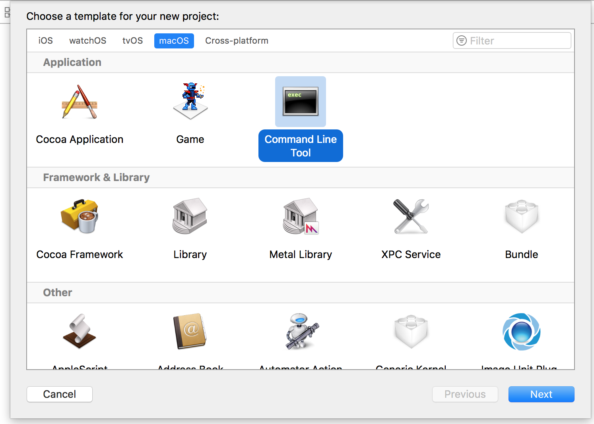
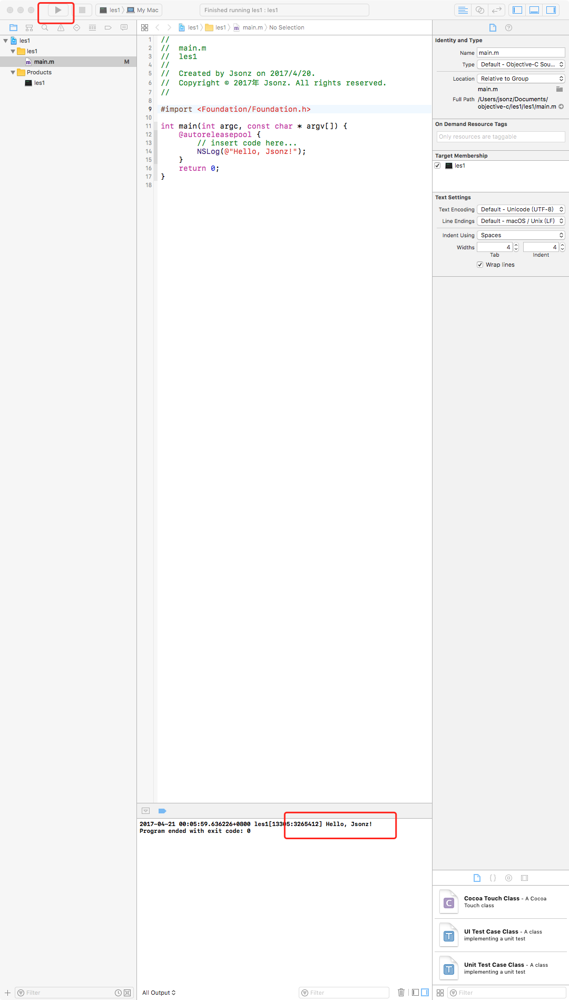

Objective-C 下面简称OC
源代码文件扩展名对比
一般来说，头文件是放声明， 实现文件放实现的代码
| 头文件 | 实现文件 | |
|---|---|---|
| c语言 | .h | .c |
| c++语言 | .h | .cpp |
| oc语言 | .h | .m |
| oc&c++ | .h | .mm |
面向对象概览
类的定义
1 | // 当前的SimpleClass 继承 NSObject 类 |
类的属性申明
1 | @interface Person: |
减号方法（普通方法又称对象方法）声明
1 | @interface Person: NSObject |
加号方法 (类方法， 又称静态方法) 声明
1 | @interface NSString: NSObject |
类的实现
1 |
|
完成的例子
1 | @interface XYZPerson: NSObject |
1 |
|
Hello World
首先去app store 下载xCode. 打开xCode
选择左侧 Create a new Xcode project=>macOS=> Command Line Tool ，选择保存项目的位置。

进入项目后点击左上角箭头运行，如果下面控制台有输出 hello world 则代表运行成功了。

1 |
|
ObjectiveC 变量与表达式
声明变量与简单运算
1 | int a = 0; |
基础类型
1 | int int a = 0; 整数 占32位2进制 |
限定词
1 | long: long int a; 比int 更大的整形 |
运算
1 | int a = 1; |
if
1 | // 如果是真的会返回 1，如果未假返回 0; |
goto语法
1 | int i = 0; |
while 循环 比较常用
1 | int a = 0; |
for循环 比较常用
1 | for (int i= 0; i < 10; i++) { |
do while 肯定会执行一次再判断是否循环
1 | do { |
break continue
1 | break 可以在 循环中 退出循环 |
switch
1 | int i = 10.0; |
函数
1 | // 求矩形面积的函数 s = a * b; |
main函数中的默认参数
1 | NSLog(@"argc=%d", argc); |
输出目前遇到的总结
1 | NSLog(@"type %d", a); |